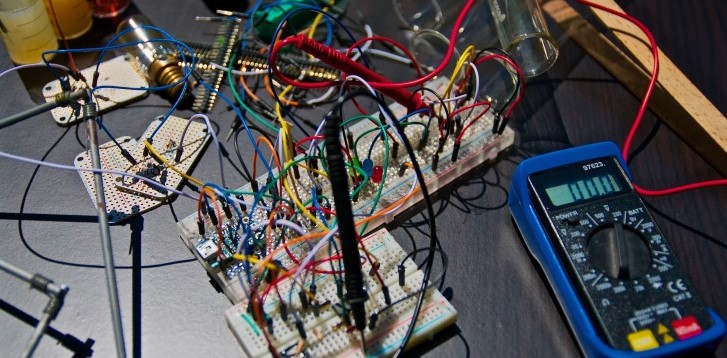

Комп’ютерна інженерія
Бажаєте отримати перспективну й затребувану професію? Любите комп’ютери та пов’язані з ними речі? Хочете отримувати високу заробітну плату та працювати з дому чи в офісі? Якщо на всі запитання ви відповіли “Так” - впевнено обирайте спеціальність “Комп’ютерна інженерія”.
Дізнатися більшеПро спеціальність

Комп'ютерна інженерія - це спеціальність, яка є досить універсальною. Це і розроблення
аналогових та
гібридних плат, i проектування мікропроцесорних та мікроконтролерних пристроїв, адміністрування
комп'ютерних систем та мереж.
Все це створює широкі можливості для працевлаштування. Ви зможете розробляти прикладне та
системне
забезпечення, проводити дослідження в області робототехніки, займатися ремонтом техніки та ін.
Хіба
не чудово? :)
Переваги
Знання
В ХРТК вам дадуть стільки знань, що голова може луснути. Тут навіть психологія та
філософія є. Це говорить саме за себе.
Працевлаштування
Ця перевага витікає з попередньої. Велика кількість якісних знань веде вас до
працевлаштування. Тому робіть висновки.
?
Вільне місце. Якщо маєте пропозиції на рахунок вмісту цієї картки - зв’яжіться з автором
цього лендінгу. Блок з контактами нижче.
Де навчатися?
Я знаю чудовий навчальний заклад, де можна отримати освіту з спеціальності 123 Комп’ютерна
інженерія та й багатьох інших. І назва цього закладу ХРТК, що розшифровується як Харківський
радіотехнічний коледж. Тут ви зможете отримати якісну освіту, звісно, якщо самі того бажаєте,
познайомитися з гарними людьми та весело проводити час (виключення сесії та тому подібні
періоди). З плюсів ще можу виокремити зручне розташування та непогану їдальню.
Цікаві факти про ХРТК
Увага! Інформація нижче є вигаданою. Будь які співпадіння
з реальністю випадкові.
В коледжі викладається предмет “Бінарне мовлення”, де студенти практикуються в
спілкування з обчислювальними машинами.
Контакти
Ваш консультант:
Гарагуля Максим

ХРТК на мапі